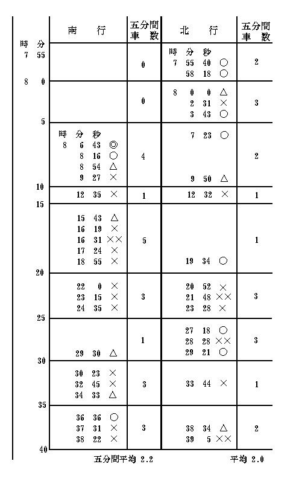

満員電車のつり皮にすがって、押され突かれ、もまれ、踏まれるのは、多少でも
必ずすいた電車に乗るために採るべき方法はきわめて平凡で簡単である。それはすいた電車の来るまで、気長く待つという方法である。
電車の最も混雑する時間は線路と方向によってだいたい一定しているようである。このような特別な時間だと、いくら待ってもなかなかすいた電車はなさそうに思われるが、そういう時刻でも、気長く待っているうちには、まれに一台ぐらいはかなりに楽なのが回って来るのである。これは不思議なようであるが、実は不思議でもなんでもない、当然な理由があっての事である。この理由に気のついたのは、しかしほんの近ごろで、それまでは単に一つの実験的事実として認識し、利用していただけであった。
なんと言ってもあまり混雑のはげしい時刻には、来る電車も来る電車も、普通の意味の満員は通り越した特別の超越的満員であるが、それでも停留所に立って、ものの十分か十五分も観察していると、相次いで来る車の満員の程度におのずからな一定の律動のある事に気がつく。六七台も待つ間には、必ず満員の各種の変化の相の循環するのを認める事ができる。
このような律動の最も鮮明に認められるのは、それほど極端には混雑しない、まず言わば中等程度の混雑を示す時刻においてである。
そういう時刻に、試みにある一つの停留所に立って見ると、いつでもほとんどきまったように、次のような週期的の現象が認められる。
まず停留所に来て見るとそこには十人ないし二十人の群れが集まっている。そうして大多数の人はいずれも熱心に電車の来る方向を気にして落ち着かない表情を露出している。その間に群れの人数はだんだんに増す一方である。五分か七分かするとようやく電車が来る。するとおおぜいの人々は、降りる人を待つだけの時間さえ惜しむように先を争って乗り込む。あたかも、もうそれかぎりで、あとから来る電車は永久にないかのように争って乗り込むのである。しかしこういう場合にはほとんどきまったように、第二第三の電車が、時間にしてわずかに数十秒長くて二分以内の間隔をおいて、すぐあとから続いて来る。第一のでは、入り口の踏み台までも人がぶら下がっているのに、それがまだ発車するかしないくらいの時同じ所に来る第二のものでは、もうつり皮にすがっている人はほんの一人か二人くらいであったり、どうかすると座席に空間ができたりする。第三のになると降りる人の降りたあとはまるでがら明きの空車になる事も決して珍しくない。
こういうすいた車が数台つづくと、それからまた五分あるいは十分ぐらいの間はしばらく車がと絶える。その間に停留所に立つ人の数はほぼ一定の統計的増加率をもって増して行く。それが二十人三十人と集まったころにやって来る最初の車は、必ずすでに初めからある程度の満員である。それがそこで下車する数人を降ろして、しかして二十人三十人を新たに収容しなければならない事になる。どうしても乗れなくて乗りそこねた数人の不幸な人たちは、三十秒も待った後に、あとから来た車の座席にゆっくり腰をかけて、たとえば暑さの日ならば、明け放った窓から吹き入る涼風に目を細くしながら、遠慮なく足を延ばして乗って行くのである。そうして目的地に着いて見ると、すぐ前に止まっている第一電車は相変わらず満員で、その中から人と人とを押し分けて、
私はいつもこうした混雑の週期的な波動の「峰」を避けて「谷」を求める事にしている。そうして正常な座席にゆっくり腰をかけて、落ち着いた気分になって雑誌か書物のようなものを読む事にしている。波の峰から谷まで待つために費やす時間は短い時で数十秒、長くて一分か二分を越ゆる事はまれなくらいである。その間には私はそこらの店先にある商品を点検したり、集まっている人たちの顔やあるいは青空に浮かぶ雲の形態を研究したりする。そうしたためにもしこの
目的地に一分ないし二分早く到着する事がそれほど重大であるような場合は、少なくも私のようなものにはほとんど皆無であると言ってもいいのである。私のようなものでなくても、下車後にこれくらいの時を浪費しないという保証をしうる人が何人あるか疑わしい。
このような事はおそらくわかりきった事であって、だれでも知りきっている事でなければならない。それにもかかわらず、大多数の東京市内電車の乗客は、長い休止の後に来る最初の満員電車に先を争って乗らなければ気が済まないように見える。これは自分のようなものにはほとんど了解のできない心持ちであるが、しかしよく考えてみると、これがあるいはわが国民性の何かの長所と因縁があるかもしれない。たとえば日本人が戦争に強いというような事実とどこかで連関しているのかもしれない。あるいはまたいわゆる現代思想と称せらるる
しかしここで私の考えてみたいと思う事は、そういう大多数の行為の是非の問題ではなくて、そういう一般乗客の傾向から必然の結果として起こる電車混雑の律動に関する科学的あるいは数理的の問題である。
問題を簡単にするために、次のような場合を考えてみる。すなわち、ある終点からある一定時間ごとに発車する電車が、皆一様な速度で進行し、また途中の停留所でも一定時間だけ停車するように規定されたとする。もしこの規定が完全に実行されれば、その線路の上の任意の一点を電車が相次いで通過する時間間隔は、やはりどれも同一でなければならない。しかるに実際上は、避くべからざる雑多の複雑な偶然的原因のために、この一定であるべき間隔に少しずつの異同を生じ、理想的にはたとえばＴであるべき間隔が T+ΔT となる。この ΔT［＃「ΔT」は縦中横］ は正負大小種々であって、いわゆるガウスの誤差方則、または類似の方則によって分布されるものであろう。平たく言えば早すぎるのやおそすぎるのがいろいろに
ある停留所に電車が到着する時刻の
大小種々な時間誤差 ΔT［＃「ΔT」は縦中横］ がどういう順序に相次いで起こるかということもやはりまた一種の「偶然の方則」に支配される。この方則はあまり簡単でないがまずだいたいにおいては平均三台目か四台目ごとに目立って早すぎるものあるいはおそすぎるものが来る事になるのである。
以上は乗客という因子を全然度外視しての議論であるが、次にこの因子を考慮に加えると、どうなるかという問題に移る。
乗客が単位時間内に一つの停留所に集まって来る割合は、だいたいにおいてはそれぞれの時刻と場所によりおのおの一定の平均値（たとえばｎ）があって、実際上はやはりその平均値の近くに偶然的変異を示すものと考えても不都合はない。そうすると一つの電車が収容すべき人数は、平均上、すぐ前の電車甲がそこを発車してからの経過時間に比例するものと考えてもいい。それでもし甲の電車が平均よりａだけ早く出た後に来た乙電車がｂだけおそく発車すると、乙電車は平均よりも n(a+b) だけ多くの人を収容しなければならない事になる。
あまり詳しい計算などは略して、ごく概略に考えても、要するに少しおくれて停留所に来た車は、少し早めにそこに来た車よりも統計的に多数の乗客を収容しなければならない事は明らかである。
もちろん下車する人の事も考えなければならないが、今の問題にはこれを
そこでこのようにして生じる乗客数の多少が電車の停留時間にいかなる影響を及ぼすかを次に考えてみる。乗客が多ければ多いほどこれは長くなる。たとえそれがみんなおとなしい紳士ばかりであっても、乗り込みに要する時間は人数と共に増す。もし下車する人を待たずに無理に押し入ろうとしたり、あるいは車掌と争ったりするようだとさらに停車時間は延長される。このようにして停留時間の延長した結果はどうであるか。
これは、言うまでもなくこの乙電車が次の停留所に着すべき時間を遅らせる。従って次の停留所でその遅刻のためによけいに収容しなければならない前述の nb の数を増加させる。その結果はさらに循環的に、その次の停留所に着く時刻を遅らせる、and so on で、この乙電車の混雑はだんだんに増すばかりである。最も簡単な理想的の場合だと、停車回数に等しい
こののろわれた乙電車の次に来る丙電車はどうであるか、この丙電車が第一の停留所に来る時刻が規定の時間どおりであったとすると、前の乙電車がｂ時間遅れてくれたおかげで、平均よりは nb だけ少ない人数を収容すればよいことになる。もしこの丙電車が規定よりｃ時間遅れたとしても、乙が遅れなかった場合よりはやはり nb だけ過剰収容数が減るわけである。もし丙が規定よりｃだけ早ければ、この電車は n(b+c) だけ少ない人数を収容しただけで発車ができる。この結果はどうなるか。これは明らかに乙丙電車の間隔を次第次第に減少し、従って乙の混雑と丙の空虚をますます著しくする事に帰着して行くのである。
長い線路の上にはじめ等間隔に配列された電車が、運転につれて間隔に不同を生じる。そうして遅れるものと進むものとが統計上三または四の平均週期で現われるとすると、若干時の後に実現される運転状況は、私がこの編の初めに記述したとだいたい同じようになるわけである。すなわち三四台の週期で、著しい満員車が繰り返され、それに次ぐ二三台はこれに
以上は、事がらをできるだけ簡単に抽象して得られた理論上の結果である。実際上は、以上のほかになお合わせ考えるべき幾多の因子の多数にある事はもちろんである。しかし以上の考察はこれら因子中の最も重要なるものに関したもので、これからの結論がだいたいにおいて事実とあまりに懸隔したものではないという事も許容されるだろうと信じる。
私はこのような考えを正す目的で、時々

この表で見ると、たとえば五分ごとに通る車数はかなりの変化があるにかかわらず、その平均数は北行南行ともにほぼ同様で、約二分半に一台の割合である。しかし実際の個々の時間間隔は、南行の最初における十一分三秒プラスという極端から、わずか十二秒という短い極端まで変化している。しかして多少の除外例はあるにしても、だいたいにおいて長い間隔の後には比較的混雑した車が来る事、短い間隔の後にはすいた車が来る事がわかるだろう。
今これら各種の間隔の
四分以上 ４回 │ 二分以下 23回
三分以上 ９回 │ 一分以下 11回
二分以上 15回 │ 四十秒以下 ５回
これでわかるように、間隔の回数から言うと、長い間隔の数はいったいに少なくて、短いものが多い。全体三十八間隔の中で、四分以上のものは四回、すなわち全体の約一割ぐらいのものである。しかしここで誤解してならない事は、乗客がこれらの長短間隔のいずれに遭遇する三分以上 ９回 │ 一分以下 11回
二分以上 15回 │ 四十秒以下 ５回
これは何を意味するか。
個々の乗客が全く偶然的に一つの停留所に到着したときに、ある特別な間隔に遭遇するという
それでともかくも、全く顧慮なしにいつでも来かかった最初の電車に飛び乗る人にとっては、すいたのにうまく行き会う機会が少なくて、込んだのに乗る機会が著しく多い。そういう経験の記憶が自然に人々の頭にしみ込む。おそらく込み合っていた多数の場合の記憶は、まれにすいていた少数の場合の記憶よりも強く印銘せられるとすると、以上の比例の懸隔は、心理的に変化を受け、必ずいくぶんか誇張されて頭に残るかもしれない。従って多くの人はついついすいた電車の存在を忘れて、すべてのものが満員であるような印象をもつ事になるかもしれない。
この最後の点は不確かだとしても、次の結論は免れ難い、すなわち「来かかった最初の電車に乗る人は、すいた車に会う機会よりも込んだのに乗る機会のほうがかなりに多い。」
このようにして、込んだ車にはますます多くの人が乗るとすれば、この電車はますます規定時間よりも遅れるために、さらにまた混雑を増す勘定である。
これをせんじつめると最後に出て来る結論は妙なものになる。すなわち「第一に、東京市内電車の乗客の大多数は――たとえ無意識とはいえ――自ら求めて満員電車を選んで乗っている。第二には、そうすることによって、みずからそれらの満員電車の満員混雑の程度をますます増進するように努力している。」
これは一見パラドクシカルに聞こえるかもしれないが、以上の理論の当然の帰結としてどうしてもやむを得ない事である。もしこれがおかしいと思われるなら、それは私の議論がおかしいのではなくて、そういう事実がおかしいのであろう。
それでもしこのような片寄りがちの運転状況を避けて、もう少し均等な分配を得たいというならば、そのために採るべき方法は理論上からは簡単である。第一には電車の車掌なり監督なりが、定員の励行を強行する事も必要であるが、それよりも、乗客自身が、行き当たった最初の車にどうでも乗るという要求をいくぶんでも控えて、三十秒ないし二分ぐらいの貴重な時間を犠牲にしても、次のすいた電車に乗るような方針をとるのが
しかし満員電車をきらうか好くかは「趣味」の問題であろうから、多数の乗客がもし満員電車に先を争って乗る事に特別な興味と享楽を感じるならば、それはいたし方がない。その趣味の是非を論じるための標準は数理や科学からは求められない。
昔は、人に道を譲り、人と利福を分かつという事が美徳の一つに数えられた。今ではそれはどうだかわかりかねる。しかしそういう美徳の問題などはしばらくおいて、単に功利的ないし利己的の立場から考えても、少なくも電車の場合では、満員車は人に譲って、一歩おくれてすいた車に乗るほうが、自分のためのみならず人のためにも便利であり「能率」のいい所行であるように思われる。少なくも混雑に対する特別な「趣味」を持たない人々にとってはそうである。
これは余談ではあるが、よく考えてみると、いわゆる人生の行路においても存外この電車の問題とよく似た問題が多いように思われて来る。そういう場合に、やはりどうでも最初の満員電車に乗ろうという流儀の人と、少し待っていて次の車を待ち合わせようという人との二通りがあるように見える。
このような場合には事がらがあまりに複雑で、簡単な数学などは応用する筋道さえわからない。従って電車の場合の類推がどこまで適用するか、それは全く想像もできない。従ってなおさらの事この二つの方針あるいは流儀の是非善悪を判断する事は非常に困難になる。
これはおそらくだれにもむつかしい問題であろう。おそらくこれも議論にはならない「趣味」の問題かもしれない。私はただついでながら電車の問題とよく似た問題が他にもあるという事に注意を促したいと思うまでである。
（大正十一年九月、思想）